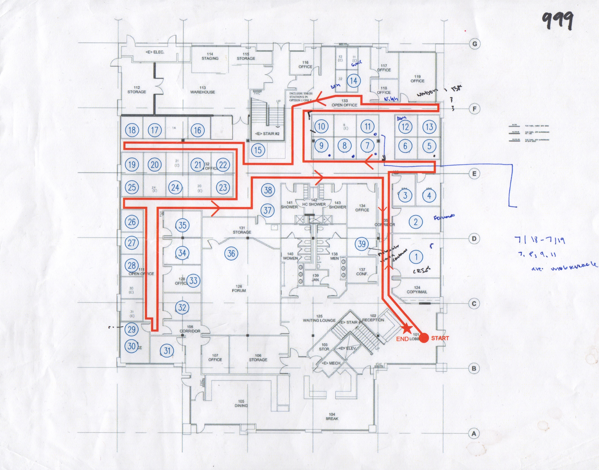
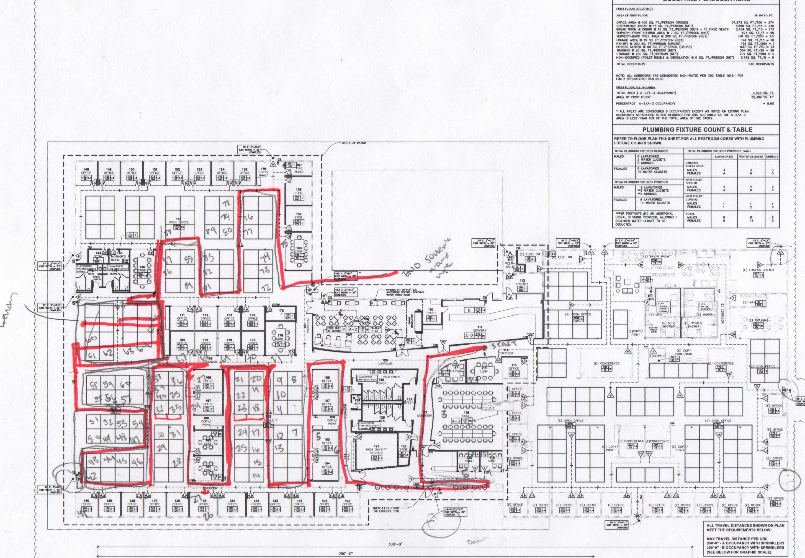
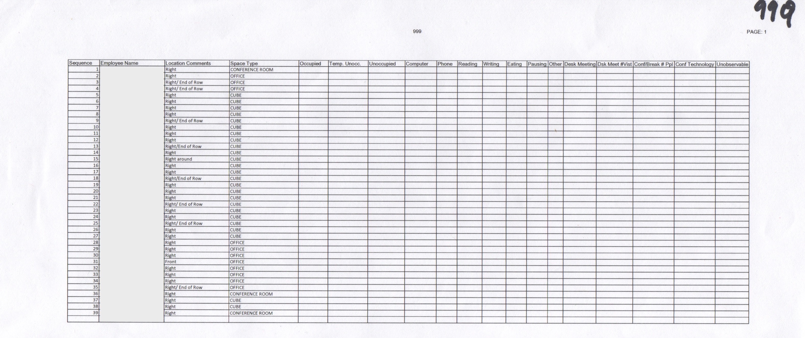

Programming & Field Studies
Architectural programming's problem seeking approach requires that problem seeking has a distinct separation between programming and design. It runs under the principle that before a solution can be made, you need to know your questions first (a more waterfall approach than agile). It's argued that solutions will be partial and immature if the problem is not fully laid out.
The process the team followed fell under the following guidelines:
There are 5 steps to the process.
1. Establish goals
2. Collect and analyze facts
3. Uncover and test concepts
4. Determine needs
5. State the problem.
1. Establish goals
2. Collect and analyze facts
3. Uncover and test concepts
4. Determine needs
5. State the problem.
I came onto both of these projects under the collect and analyze facts phase.
As an intern, I had two roles, one was to assist organizing the information collected from vision sessions with clients, surveys, etc into reports. The other role was with setting up how the on-site observation studies would be run, such as mapping out the routes beforehand, creating the spreadsheets to be used to collect information, loading the information onto ipads, and checking if employees were sitting where hr mapped where they were sitting (this was important so we could later sort people based on their department).
Prior to the observation study, the team had worked with the companies to determine what they wanted to "keep, fix, lose and create" for their company's culture.
Through various visioning sessions and meetings with other stakeholders, they had already began to draft some goals for how the new building might affect the culture of the company. As we know, workplaces can can affect worker productivity and culture so it was necessary to complete these things to make sure that both the goals of the business owners and their employees could be met.
Field Studies/ Contextual Inquiry at the Actual Workplaces

I worked on two observation studies that both had similar procedures. One was at Corporate Client based in Utah and the other was a Biotech Client based in Sunnyvale. Both of the clients were moving into new buildings and needed assistance with the programming of the new spaces. Before going on site required some pre-work to make sure the study ran smoothly. For the corporate client, I observed a three story building with different departments on each floor while for the biotech company I looked at one department located on one floor.
How did we work with client data to construct these studies?

Does your HR keep track of where you sit? Does your company have a current plan of your building? In many cases, these change and aren't updated. Also the technology used to keep track can vary. In one of the cases, not everyone had to be observed, so it was important to make sure that the names of the people on those lists were listed on the plan.
The above plan is an example of how I annotated the map. Prior, I had to check to make sure the people to be observed were on list of people to be observed. This was how we were scoping out and planning the how the field study would work.
The above plan is an example of how I annotated the map. Prior, I had to check to make sure the people to be observed were on list of people to be observed. This was how we were scoping out and planning the how the field study would work.
Setting up what information to collect.

To collect data, we also needed to know what information to collect. In general, the goal was to get an idea of what the habits of employees were like. Criteria was generally based on previous field studies that were conducted. Some of the things we looked at were the space type such as if the person was in a cube or an office. It was a way to see if people needed more offices. In addition, we looked to see when the space was occupied and if there were meetings. Some places have unused meeting rooms. It's also important to see what kinds of tasks people were doing such as are they more likely to be taking calls or crunching numbers. I was in charge of creating these spreadsheets and loading them onto ipads. We also had paper forms just incase. This format made it so that we could send the spreadsheet immediately after each hour of study and it could be analyzed by an analyst on our team.
For this study we looked at:
For this study we looked at:
- What type of space (cube, office, conference room, etc)
- Was the space occupied, unoccupied, did the person just step out?
- What were they doing (computer, phone, reading, writing, eat, pausing, other)
- Was there a desk meeting? How many people?
- Were people taking breaks together?
- What conferencing technology might they be using?
On-site is probably going to look different than "on-map"
The observers carried ipads and annotated maps of the site (like the maps shown above). However, not everything goes as planned and it was important to be able to change and adjust the original plans to match what the site is really like. Some places are used for storage or there might be construction in the office. Employees are anonymized in the actual analysis of the information, but for locating where you were on the map, it was important to also look for name tags or other indications that you are observing what you think you are observing. The information on the spreadsheet collected the quantitative information about how the space was used. The image below shows rough notes about the spaces so we wouldn't mark a cube for storage as a person!
In addition to the spreadsheet data, we also took an anthropological approach on the space and noted some habits. Below are just some rough observations notes as an example:
July 19th Observations:
9AM
In addition to the spreadsheet data, we also took an anthropological approach on the space and noted some habits. Below are just some rough observations notes as an example:
July 19th Observations:
9AM
- In the “construction zone”/ empty space area, people still stand to chat about work.
- Coffee Area is used, people casually chatting
- One thing our study does not account for is when people chat in between cubes. Because of their close proximity to one another, it’s easy for coworkers to ask other coworkers general questions while they sit at their desk.
- The breakroom can be used for a phone call when the workplace is too busy. Break room used for discussions (2 people)
- People are coming in and out of this building.
- Is it difficult to take phone calls in the general work area? People take calls in the break room or outside or in the hallways
- In the construction area, groups of people congregated (usually small groups of 2). They seemed to have come from a meeting and were just catching up to confirm some things.
- When there are events in the main forum conference room, they seem to get stuff catered and food is left in the kitchen.
As an architecture student, it left me with a better understanding of how people really use buildings.
From the studies we discovered when employees went to lunch or when they were out and how a of people were having desk meetings. On company had onsite yoga classes so around that time less people were at desks.
In architecture studios, you design buildings and sometimes you might feel disconnected from the fact that people actually use your buildings. You add an entourage person to match how you envision someone would use your space, but the reality is that the space won't be used as you intended. Nevertheless, if you do know who is occupying the space, you can make educated decisions about where they sit.
In architecture studios, you design buildings and sometimes you might feel disconnected from the fact that people actually use your buildings. You add an entourage person to match how you envision someone would use your space, but the reality is that the space won't be used as you intended. Nevertheless, if you do know who is occupying the space, you can make educated decisions about where they sit.
Field Studies can provide quantitative and qualitative data about how people are using space, but how do people really view their space? Surveys provided a different take.
How people use their space versus what they think about their space can be different. Before I came onto the team, a lot of the early sessions of meeting with employees and discussing what kinds of spaces they would like were already completed, but I was presented with the task of organizing the information (because there was a lot of different voices and opinions!) into something more coherent.
One of the things I worked on was looking at surveys and grouping the information into different themes. The surveys were digital, but writing down the different topics by hand after reading over them made it easier to organize and grasp what the users were trying to say.
One of the things I worked on was looking at surveys and grouping the information into different themes. The surveys were digital, but writing down the different topics by hand after reading over them made it easier to organize and grasp what the users were trying to say.
Conclusion? Contrary to the idea that everyone wants an open-plan work place, people want to work privately, too.
This experience introduced me to what information you might need to run a field study and how to go about running a field study. Field studies are interesting not only because of the data you collect, but to also consider your role as a researcher on site. In some cases, employees might not really have an idea who you are or why they're seeing you every house (even though there's a sign on their department's door about the study). It brings up an interesting point of the role of the researcher. At the beginning, people are curious about your role, but by Friday, they're used to you.
In the end, it's all about the user!
Most importantly, I learned about the user and what they really want in a building. This was fairly different from my architecture studio experiences where we do site analysis but not the users other than their demographics. We craft in our mind who might use the building based off of what stores and buildings are already on site instead of seeking out who is going to occupy the site directly.
I discovered the importance of real user data. This experience sparked my greater interest in data because I could no longer see a design suitable unless I understood the context. Looking at the trajectory of my work, the sudden emphasis of data was without a doubt partially due to this experience.
I discovered the importance of real user data. This experience sparked my greater interest in data because I could no longer see a design suitable unless I understood the context. Looking at the trajectory of my work, the sudden emphasis of data was without a doubt partially due to this experience.